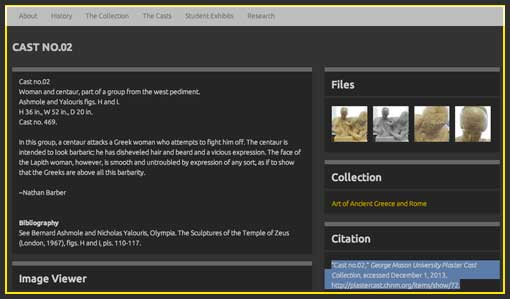
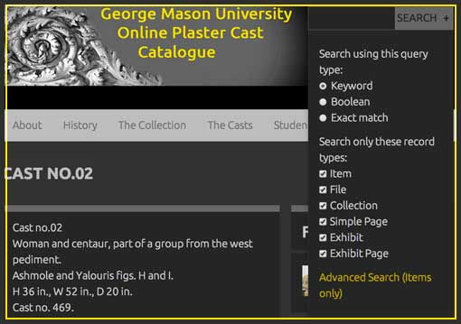

Navigating this Site
Thank you for visiting this site. We appreciate your interest in the GMU Plaster Cast Project and want your experience to be both enjoyable and informative. Here are some helpful hints to help you navigate this site.
Understanding the Content
- While this site is first and foremost a catalogue of the GMU cast collection, it is structured around the history of cast collection and how GMU came to possess approximately 70 casts from the Metropolitan Museum of Art. To fully understand the context of our collection we recommend that you begin with the “About” page and simply click the yellow “continue” button located at the bottom right of each page.
Accessing and Using the Catalogue

- To browse all items click on the “Casts” page located in the navigation bar then sort the items by title to view each entry in numerical order. If you wish to view casts from a specific collection click on our “Collections” page in the navigation bar and select the collection you wish to view.
- We welcome and encourage scholars to use our site and images for future research. We have made it easy to cite our page by copying and pasting the “citation” link located on the right of each entry should you decide to use an image, quote, or information from our site. Refer to the screenshot image on the right.
Additional Notes
- All clickable links appear in bright yellow.
- The references of casts inside the image captions refer specifically to the George Mason casts and include its collection in parentheses.
- Our search engine offers a variety of options to suit the needs each viewer. Click on the + sign located to the right of the search engine to select your preference. Refer to the screenshot image on the right.